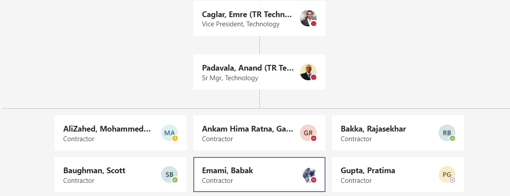
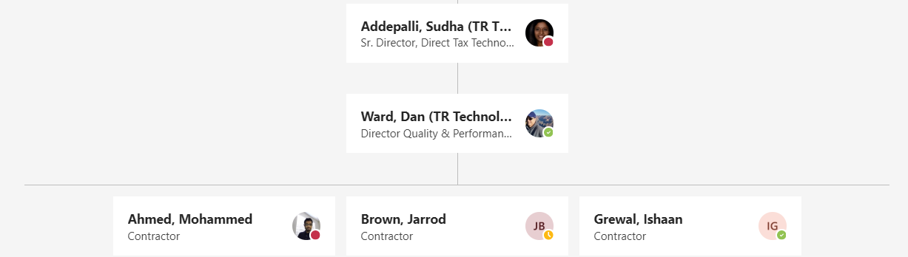

ONESOURCE Indirect tax technology provides a simpler and automated approach to solve complex global tax challenges. It has 2000 servers and multitude of applications and web services to manage the enterprise customers like HP, BP, GE etc. The real time transactions with micro seconds latency and scale are important for the customers. We are seeing tremendous customer growth with from enterprise, small and medium based customers, and expanding the features and migrating the current on-prem customers to enterprise cloud. Develop features dealing with the huge amount of data and simplifying the approach for the customers.

